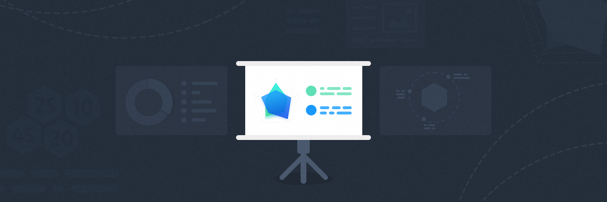
MakicLin
11月09日
第十章：幻灯片设计的建议
| 本文为付费栏目文章，您已订阅，可阅读全文 |
欢迎回来
第九章我们讲解了长图的设计技巧，这一章，我们将会讲解另一个日常接触的设计场景：幻灯片。
幻灯片设计是一个非常大的话题，由于幻灯片的制作目的不同（配合演讲或供人阅览……），针对的人群不同（教育、商业、公益……），对好的幻灯片的评判标准也不是一定的。一篇文章的范围之内可能难以涉及到幻灯片制作的每一个细节，但下面这些建议，能让你避开很多幻灯片制作时可能犯的错误。
接下来我们将从「为什么要做幻灯片」开始，为你提供制作流程、视觉风格、动画等几个方面的幻灯片制作建议。
为什么要做幻灯片
我们做过的幻灯片可能已经数不过来了，但你有没有想过为什么要做一个幻灯片呢？
一个英文俗语很好地诠释了幻灯片的意义：
A picture is worth a thousand words.
这句话的意思是，一图胜千言，图片弥补了我们演讲时无法传达视觉的缺陷。而幻灯片的意义恰恰就是用视觉的力量辅助口语演讲。
比如你的演讲内容强烈地依赖视觉展现，那么幻灯片就是最好的工具。如果你的演讲内容中包含着复杂的数据，使用幻灯片将数据视觉化也是非常好的办法。
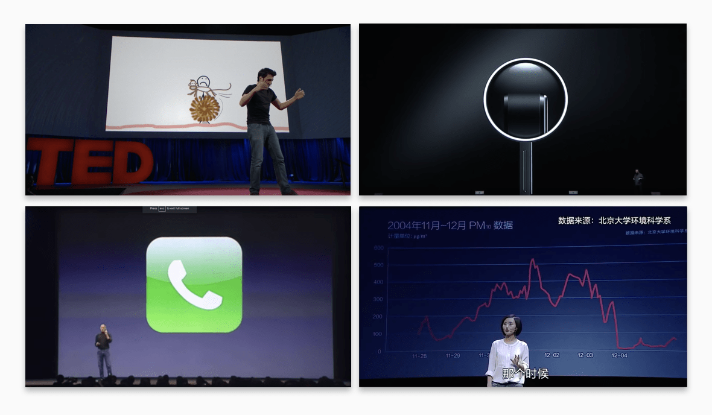
用视觉的力量辅助口语演讲
当然，如果你的演讲内容无需任何视觉辅助，或者要给观众留下自行想象的空间。那么幻灯片就没有必要，过度的视觉展示甚至会让观众分心。TED 上面不乏无需幻灯片的演讲，比如 Ken Robinson 的演讲《学校扼杀创造力？》就没有使用幻灯片，效果也非常好。
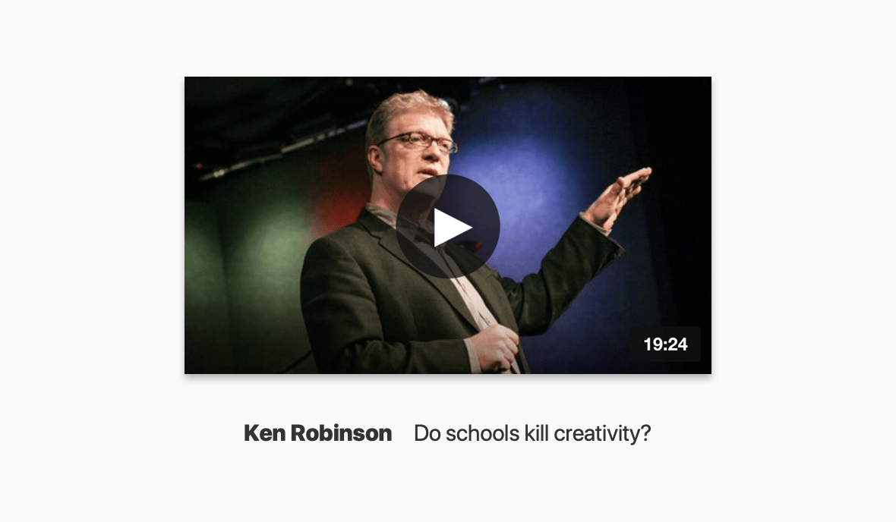
Ken Robinson 的演讲《学校扼杀创造力？》
你要做哪种幻灯片
幻灯片作为演讲的辅助工具，可以分为两类。一种是「用来讲的幻灯片」，另一种是「用来看的幻灯片」。
用来讲的幻灯片
大部分的公开演讲，通常会用「用来讲的幻灯片」。
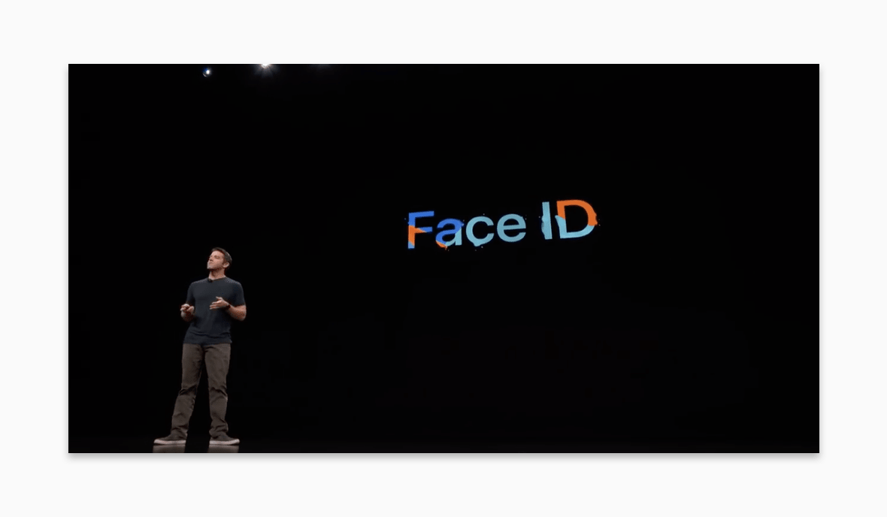
用来讲的幻灯片
此类幻灯片的特点是，看上去非常简洁，字少，如果你不听演讲只看幻灯片的话，可能完全看不懂。这种幻灯片要求演讲者能够传达所有内容，幻灯片的内容作为补充和重点。
用来讲的幻灯片主要用于公开演讲、产品发布、作品展示等场景。
用来看的幻灯片
老师上课时使用幻灯片，就是典型的「用来看的幻灯片」。
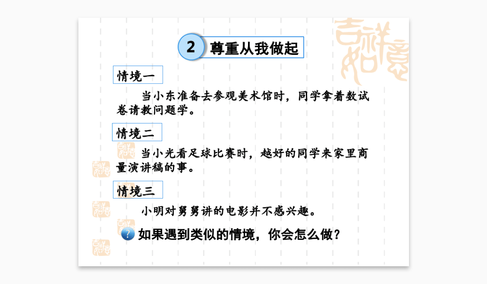
用来看的幻灯片
此类幻灯片的特点是，看上去比较复杂，密密麻麻全是字。知识点、笔记等等东西都在上面，很大程度上代替了老师的板书。用来看的幻灯片只要求演讲者可以解释幻灯片中的内容，幻灯片中的内容才是重点。
用来看的幻灯片主要用于数据分析、课件、报告等等场景。
用来讲的幻灯片和用来看的幻灯片并没有好坏的区分，只是适用的场景不同。我建议在开始制作幻灯片之前，根据你的演讲内容明确要做哪种幻灯片。明确幻灯片的类型之后，就可以进入制作流程了。
幻灯片制作流程建议
幻灯片和演讲是密不可分的，所以我建议幻灯片制作的第一步从准备演讲稿开始。这个流程和长图的制作流程比较类似：
- 写出逐字演讲稿（内容）
- 幻灯片分页稿（规划）
- 设计幻灯片（视觉化）
下面我们以《如何给 iPhone X 关机》为例，做一个三页的幻灯片以展示幻灯片制作流程：
1. 逐字演讲稿
撰写逐字演讲稿
虽然逐字演讲稿听起来可能有些夸张， 但这和长图制作流程中的「通读全文」类似，是对演讲内容的进一步理解和确定。写出逐字演讲稿之后，我们便知道讲到某段时，某页幻灯片上应该呈现什么内容。如果在幻灯片制作的过程中没有逐字稿，就会导致每页的内容都模糊不定，幻灯片不能和演讲节奏对应，最后仍然需要花费大量时间反复修改打磨。
2. 幻灯片分页稿
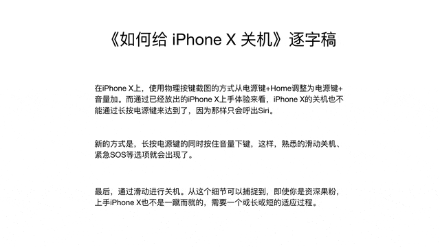
由逐字稿变成分页稿
接下来是将逐字演讲稿分成一页页的幻灯片，把每页幻灯片讲什么确定下来。幻灯片的分页可以根据演讲稿中分段而来，比如说在一场手机发布会上，演讲稿中关于屏幕的一段可以作为一页；讲解电池和充电又可以是一页；讲解音效的部分又是一页。
幻灯片分页稿的目的在于对幻灯片做出初步的安排，看看和演讲配合起来是否合理。你可以用粗框的方式，把每页的内容规划出来，不需要进行进一步的设计。
3. 制作幻灯片
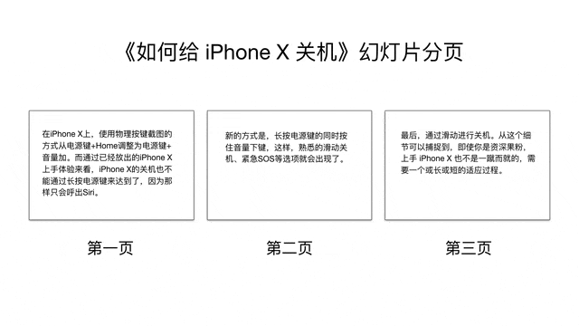
根据分页稿制作幻灯片
当逐字稿和幻灯片分页确定之后，就可以放开手脚制作幻灯片了。在幻灯片制作的同时，一定要时刻记得你的演讲内容，因为两者密不可分。
设计幻灯片是整个流程的最后一步，你将动用全身武功为幻灯片插图、做图表、排版、调字号、加动画等等。
你可能会发现，这是很多人制作幻灯片的第一个步骤，而我却将这个步骤放到最后。这是因为在演讲稿确定前，就形成既定的排版和视觉是没有依据理由的。所以我更愿意根据演讲内容确定幻灯片的视觉风格以及排版。接下来，我将给你一些关于视觉风格上的建议。
视觉风格的建议
一个幻灯片可以有很多种内容，文字、图片、图表、视频、背景等等都可以囊括在内。以上这些内容都可以展现出「视觉风格」。我们先讲讲如何构思。
构思你的视觉风格
在构思视觉风格上，苹果 2018 年 iPad 发布会的幻灯片是一个非常好的例子。即使他们开过无数场发布会，但这次的风格非常不同。
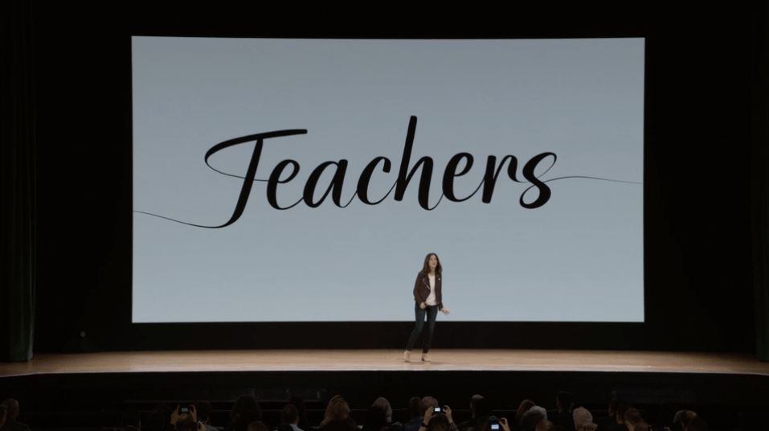
2018 年 iPad 发布会
由于这款 iPad 是针对教育市场推出的，并且一个重大的特性是支持 Apple Pencil。于是幻灯片的视觉风格采用了一种白底黑字的配色，手写风格的字体，学生笔记一样的排版。

手写风字体，笔记一样的排版
这样的视觉风格，是根据演讲主题确定的。所以，你也可以通过自己的演讲主题确定视觉风格。视觉风格的展现，主要体现在字体、字号、背景、配色、图片、图标这七个分方面，接下来我们一一讲解。
字体
什么才是适合你演讲主题的字体？让我们回顾一下罗永浩演讲的字体选择改变。
这是 2012 年罗永浩个人演讲和 2018 年的夏季新品发布会的字体对比图：
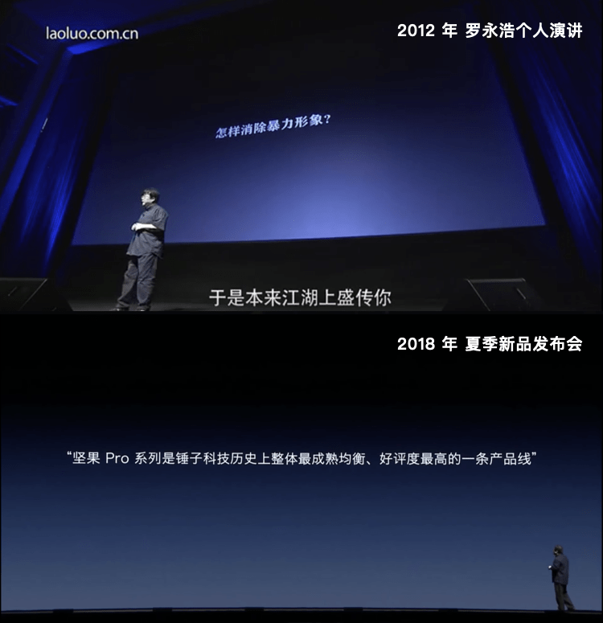
罗永浩的个人演讲幻灯片和锤子科技的发布会幻灯片字体对比
你会发现，无论是罗老师的穿着还是幻灯片的调性都没有变，变化最大的是幻灯片中的字体。这是因为较粗的宋体会给人笨重、刻板、复古的感觉，非常适合聊「怎样消除暴力形象」之类的话题，但却不是一家科技公司想拥有的标签。而在 2018 年，取而代之的是更加轻盈、干净的黑体，显然更加适合聊科技话题。
另外一个例子是刘良鹏在一席的演讲《汉字小的时候》。由于话题关于汉字起源，所以在幻灯片中使用了带有书法韵味的宋体字体。
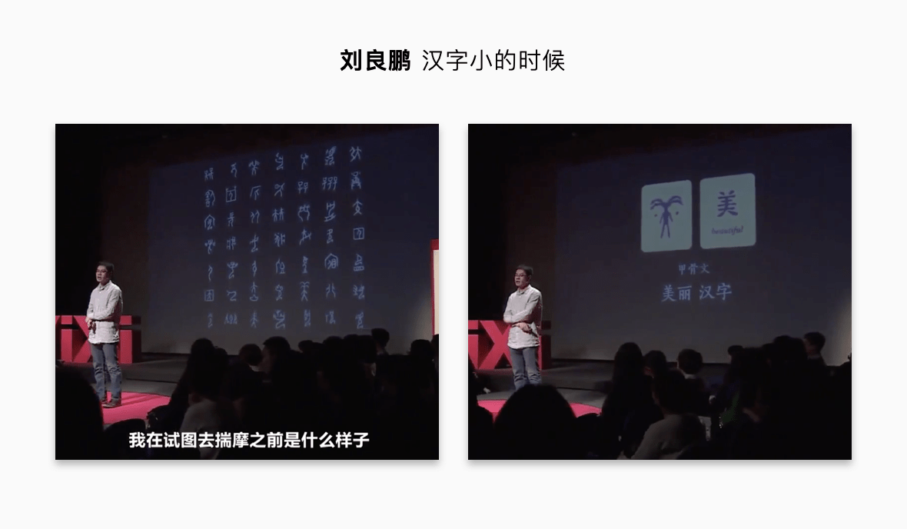
《汉字小时候》演讲截图
这就是所谓根据演讲主题选择字体。在《作者答疑汇总 2》中，我曾给过大家一个中英文字体与含义的对照表格，可以作为你选择幻灯片字体的参照。
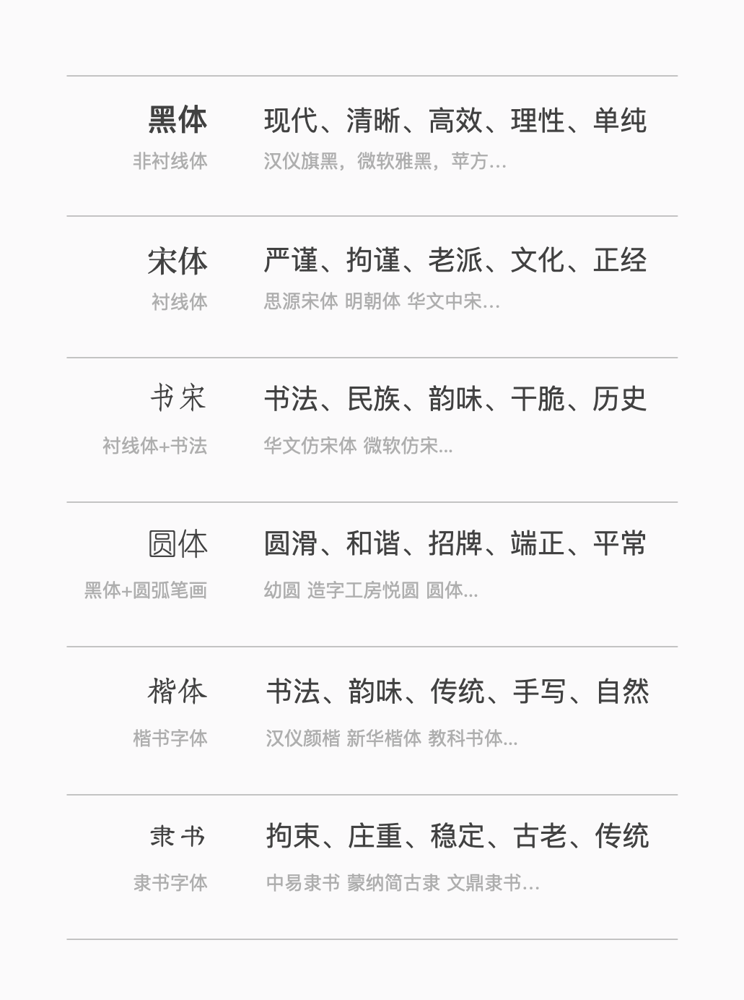
中文常用字体于表达含义对照表
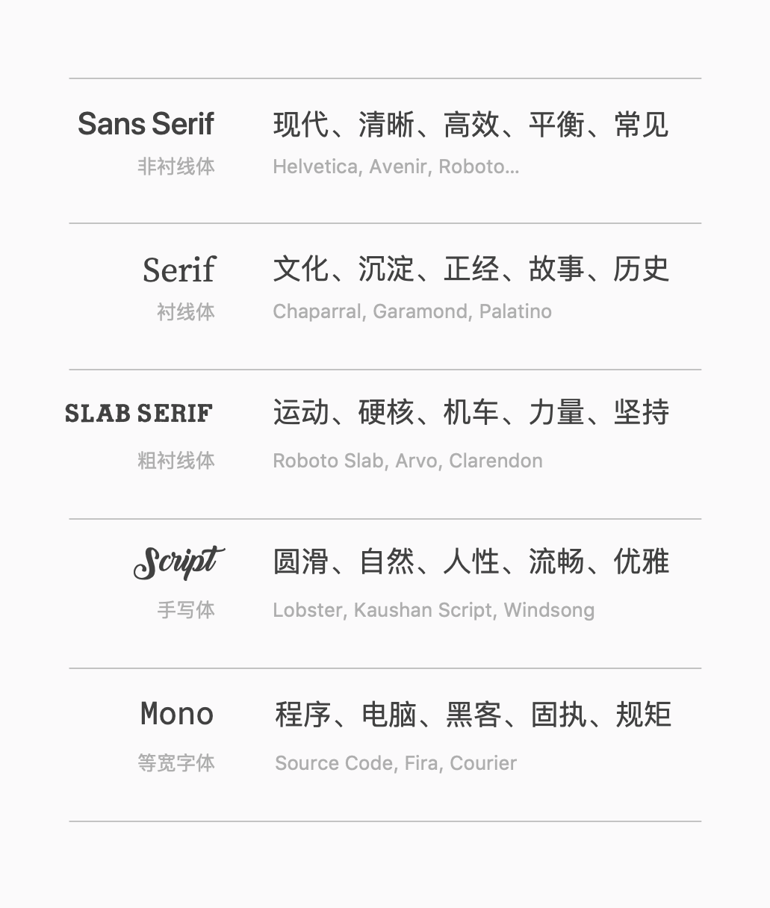
英文常用字体于表达含义对照表
除此之外，当你真的不知道该选择什么字体，或者不想让幻灯片有很强个性的时候，黑体（中文）+ 非衬线体（英文）的组合永远是安全的。而且你会发现市面上很多幻灯片都是黑体 + 非衬线体的字体组合。
字号
播放幻灯片的场景各异，大到万人的会场，小到十几个人的会议室。所以幻灯片的字号很大程度上取决于屏幕的尺寸和场馆的大小。
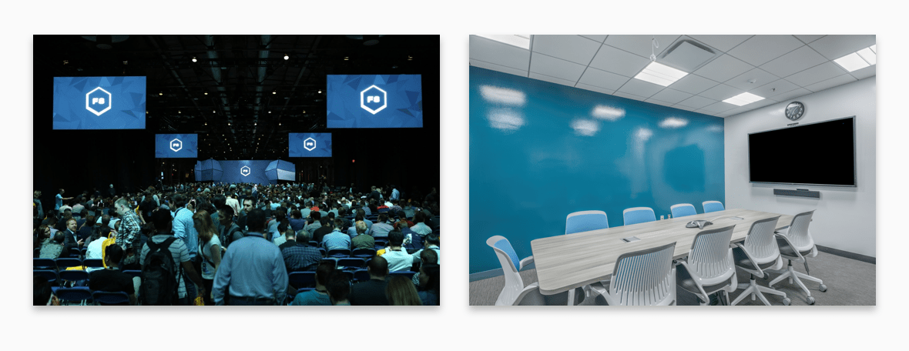
大到千万人的会场，小到十几人的会议室
合适的字号满足两个条件：
- 可以让场馆中坐在最远处的观众也能看清楚；
- 坐在场馆中间处的观众不会嫌大。
为了达到这个理想字号，你在演讲之前一定要了解一下现场，根据现场尺寸调节幻灯片中的字号大小。通常情况下，在会议室的电视上（五十五寸左右），标题字号在 80～100pt，小标题可以控制在 60pt 左右，正文设定在 34pt 左右。
如果是给人看的幻灯片（直接在电脑上下载阅读）可以参照正常的排版字号尺寸。标题大约 28pt，正文字号 12～16pt。
背景
如果说幻灯片上的文字和图片是走秀的模特，那么幻灯片的背景就是模特脚下 T 型台。幻灯片背景可以使用纯色、渐变、图片、纹理四种方式，而我对幻灯片背景的设定的建议是：不喧宾夺主。
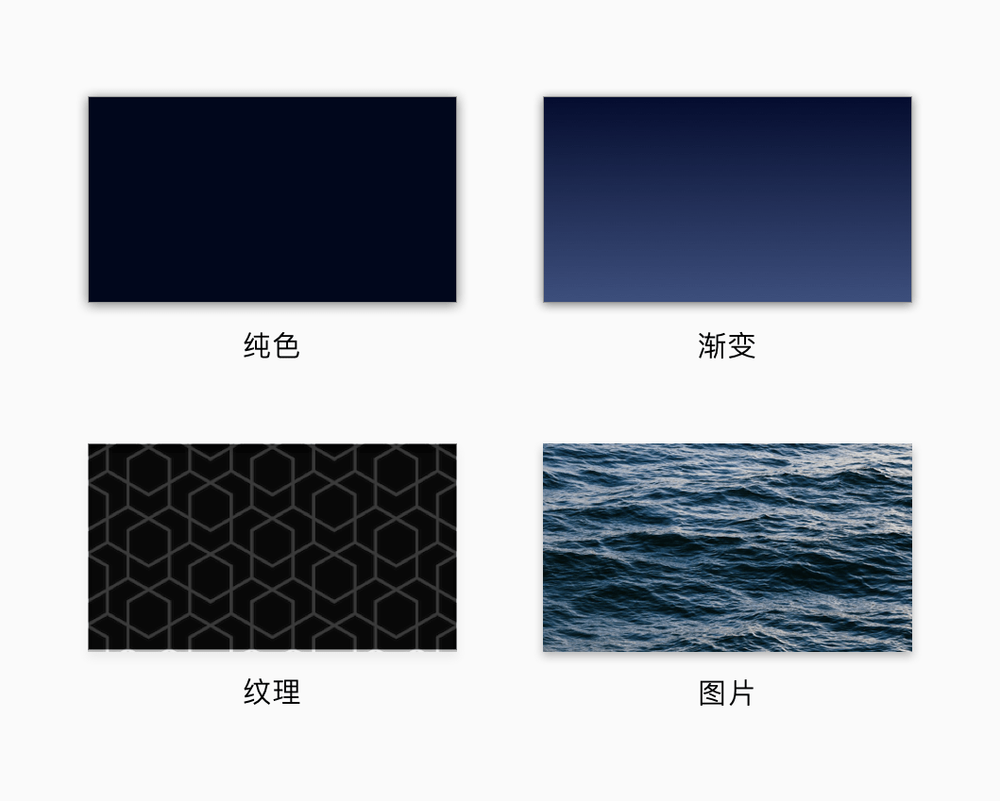
纯色、渐变、纹理、图片四种背景设定方式
1. 纯色背景
纯色是最安全的背景设定，你可以选择黑色和白色，或者接近黑色和白色的其它有色调的颜色。这样的颜色设定通常比较素雅，完全不会抢戏。

四种纯色背景
2. 渐变背景
在时长比较长的公开演讲中，渐变背景使用的次数会比较多。比起纯色背景，渐变背景也算是比较素雅，不会抢主要内容的戏份。更重要的是，渐变可以有效减少观众的视觉疲劳，适用于时间较长的演讲。
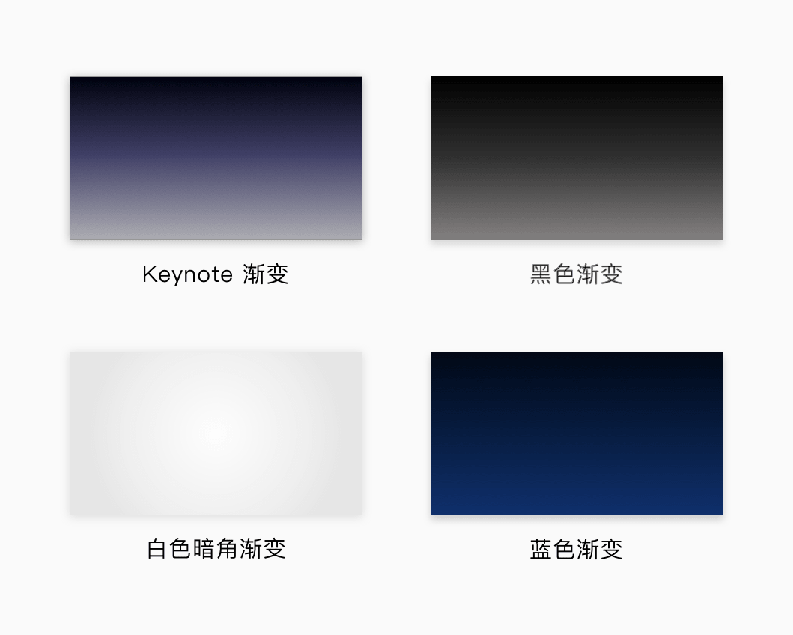
几种常用的渐变
3. 纹理背景
在纯色上面铺一层浅浅的图案或纹理，便是纹理背景。纹理背景可以作为渐变背景的一种替补方案，因为它有着和渐变背景同样的特性：不喧宾夺主且减少观众的视觉疲劳。
这个时候图案和纹理的选择就非常的重要，一定要选择切题的纹理，比如你的演讲内容和中国传统文化有关，你便可以使用传统的回纹图案作为纹理背景。
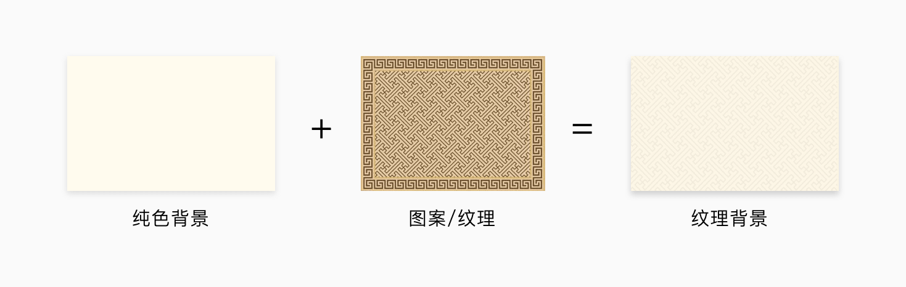
纹理背景
4. 图片背景
使用图片作为背景，给观众的信息量有些过多。所以我并不推荐一个幻灯片从头到尾都使用图片作为背景，但是图片背景可以用在你既想要展现图片，又想要展现文字信息的那几页幻灯片中。
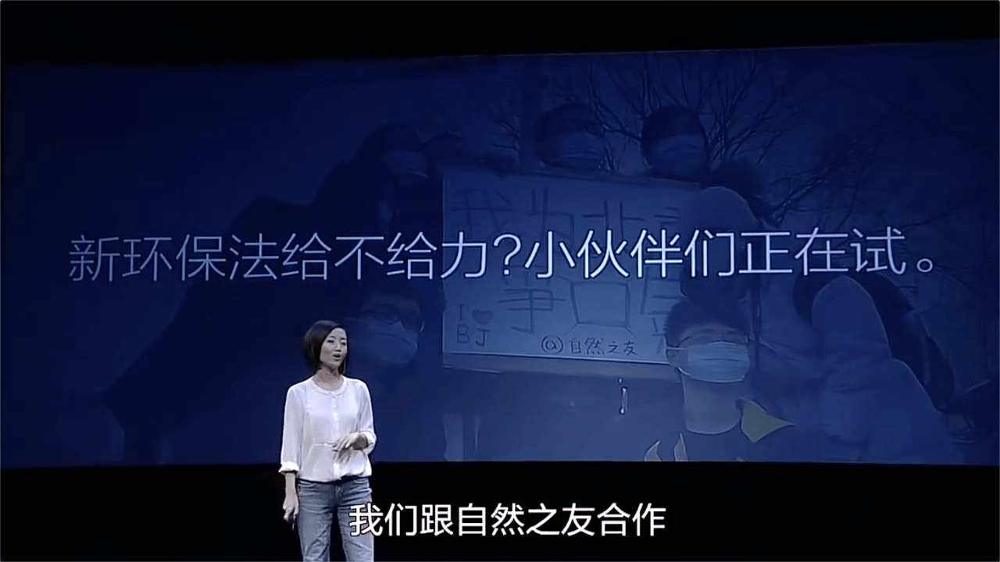
雾霾调查《穹顶之下》的一页图片背景幻灯片
为了不喧宾夺主，我们通常会对图片进行变暗或者模糊的处理，让文字信息凸显出来。
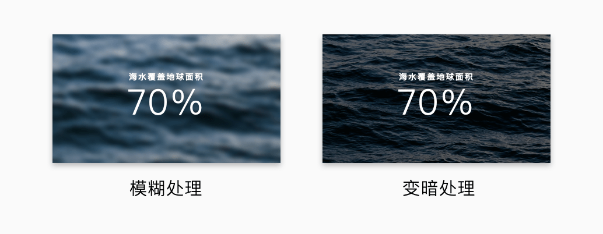
对图片进行变暗或者模糊的处理
5. 亮色调还是暗色调？
幻灯片背景的明暗也是有讲究的。幻灯片尺寸较小的情况下（投影仪，电视机等），亮色或者白色的背景比较合适，因为这符合人们白底黑字的视觉直觉。
但在幻灯片尺寸较大的情况下（比人更大的屏幕），幻灯片就成为了整个舞台的背景，这时背景常用暗色调，因为这样幻灯片本身不会太抢眼，整个讲台的焦点仍然可以集中在演讲者身上。
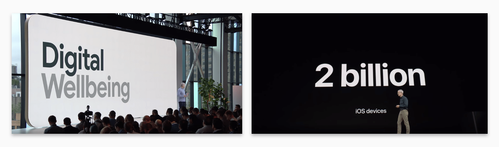
亮色调背景更抢眼
对于时间较长的演讲，比如说产品发布会，为了避免人们的视觉疲劳。那纯色基础上加入一些渐变，也是非常常用的方法。
颜色
幻灯片内的配色应该如何选择呢？这个选择过程和长图的制作流程相似。
对于品牌和机构可以使用他们已有的品牌配色方案，这样可以体现幻灯片与品牌的关联性。比如微软 Xbox One 的发布会上就大量使用了绿 + 黑 + 白作为幻灯片的配色，因为绿 + 黑 + 白是 Xbox 的品牌配色。
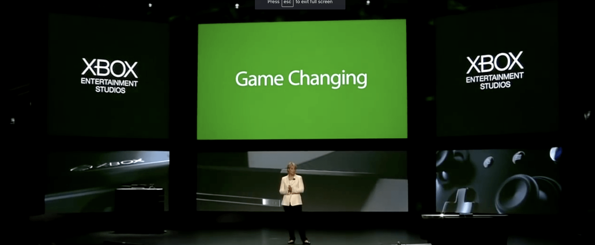
2013 年 XBOX One 发布会
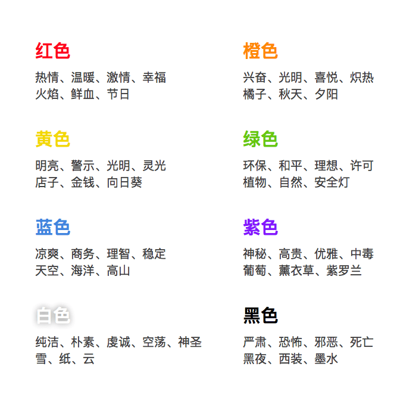
颜色象征的参考表格
比如说一款关于生命健康相关的话题，就可以使用绿色，因为绿色代表生机。然后再使用色轮工具选一个绿色的相似色（因为相似色可以表达和谐、类似），于是我选中了黄色，配色就完成了。
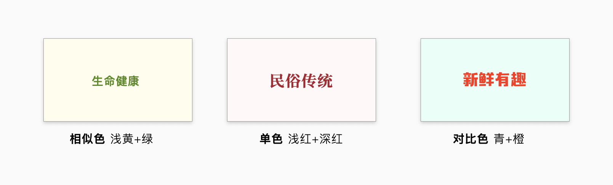
配色参考
图片
图片可能是幻灯片中占比最大的内容类型，同样，图片是最有力的表达方式。
「我去了旧金山」远没有一张金门大桥的图片，更有说服力。
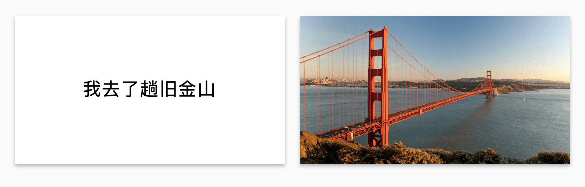
图片的力量
另外一个例子是 oculus VR 头戴设备的发布会上，研究者在解释一种「通过检测你眼镜观看位置，减少对非观看位置的渲染」，从而提升性能的技术。光听我讲，你可能已经迷茫了，但是发布会上呈现的这张图片却很好的说明这个技术：
人眼看的地方仔细渲染，人眼没有看的地方粗略渲染
为了在幻灯片中呈现恰当且美观的图片，我有如下的建议：
1. 讲什么，看什么
毕竟幻灯片是演讲者的辅助工具，其图片的内容一定要和演讲内容息息相关，也就是讲什么，看什么。「讲什么，看什么」听上去很简单，但我们经常因为所谓的「美观」忘记了图片与演讲内容的关联。
比如同样是用图片表达「我去了一趟旧金山」，有人做出了两个版本：
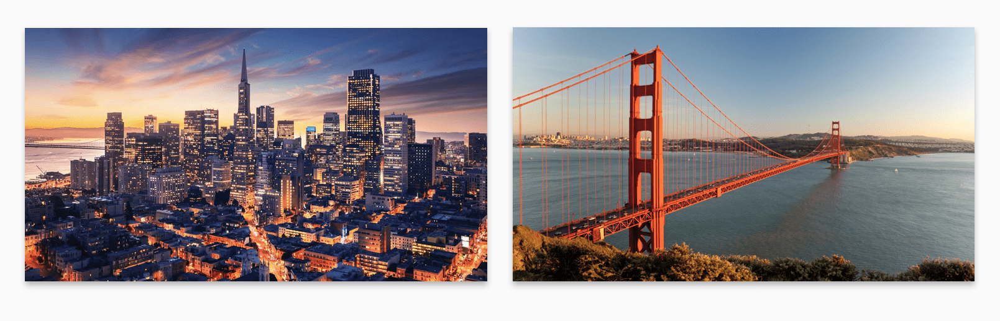
用图片表达「我去了一趟旧金山」
两张图片都是旧金山的风光图，一张是黄昏的城市景象，一张是金门大桥。但对于「我去了一趟旧金山」来讲，左边的城市景象就没有做到「讲什么，看什么」。因为对不熟悉旧金山的人来说，左边的城市风光并不能说明这是旧金山，它可以是世界上任何一个繁华都市。而右边的金门大桥就明显更具有标志性，让人立刻想到旧金山，做到了「讲什么，看什么」。
2. 保证图片清晰度
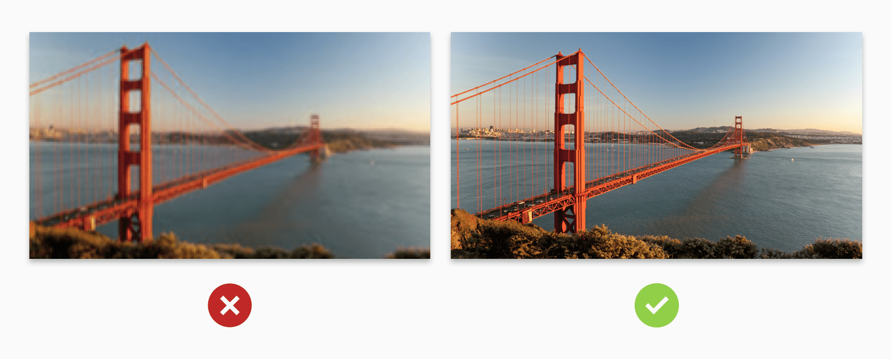
模糊的图片很糟糕
演讲时图片糊掉是非常尴尬的情况。为了保证图片清晰度，你可以去 unsplash、pexels、shutterstock、视觉中国等网站下载高质量的图片。在幻灯片制作完后，最好从头到尾放映一遍检查清晰度。
3. 克制地使用装饰性配图
你一定没少看过这样的幻灯片，上面有非常多的装饰性配图。
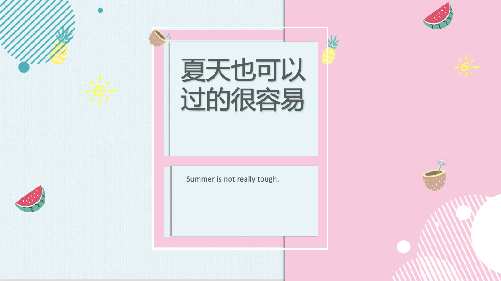
装饰性配图
我个人是比较反对这样的做法的。首先作为一张图片，装饰性配图是可有可无的存在。即使这张图片与内容有关，但终归不是主体，会导致观众分心。
如果真的要为了美观插入一些装饰性的配图，我的建议是，配图的尺寸尽量小，位置在幻灯片的角落中，不要引起观众的注意。
4. 合理地使用图片特效
无论是 PowerPoint 还是 Keynote，都内置了一些一键生成的图片特效。比如说给图片加框、加阴影、加反射效果。
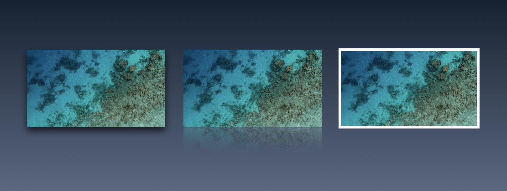
Keynote 中内置的部分图片特效
图片特效，虽然看起来更加美观，但应用时一定要考虑到它的合理性。拿上面三种来说。加阴影之后的图片感觉是浮在一个平面上，很有纵深感；加倒影之后的图片感觉是坐在一个镜面上；加框的图片好像是一张实体的照片或者绘画。这些特效分别给图片本身增加了属性和含义，根据你的演讲内容选择图像特效才是合理的。
比如说展现一张APP的截图加一个画框，就是不合理的：因为画框在现实生活中只会给画作使用，把应用截图放进画框就会非常奇怪。
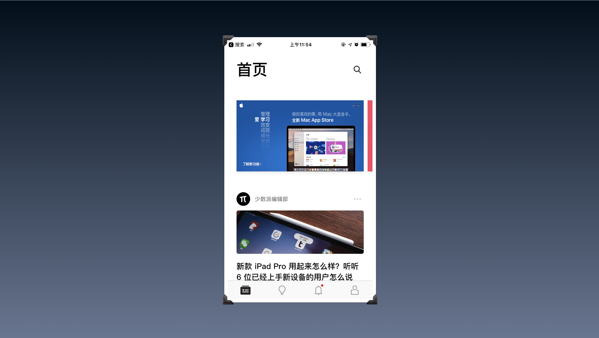
画框特效的错误用法
但给真正的画作加入画框就没有问题，因为现实中我们就是这么做的。
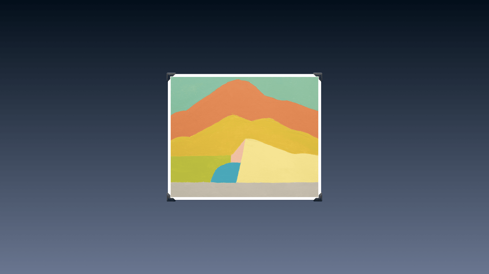
画框特效的正确用法
另一个例子是反射效果，它看上去非常华丽，但经常会造成「灾难」。比如说给人物肖像加上反射效果，就好像肖像被放到了一个镜面的地面上，而在现实生活中我们是不会把人物肖像放在镜面上的。而且这种特效很容易把一个正经的人物肖像做出扑克牌的感觉。
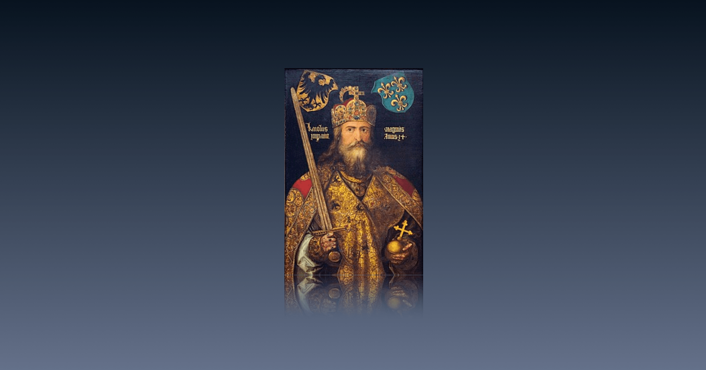
反射效果的弊端
图标
说过了字体和图片，一些解释性的图标和图解也是幻灯片中经常出现的元素。对于图标来说，你需要选择一个和内容匹配的图标风格，并且在整个幻灯片内保持图标风格的统一。
那么你可能要说，图标都有什么风格可言？图标从视觉上可以分为线框和实心的；有圆角的和比较锋利的等等。图标风格也表达一些含义：
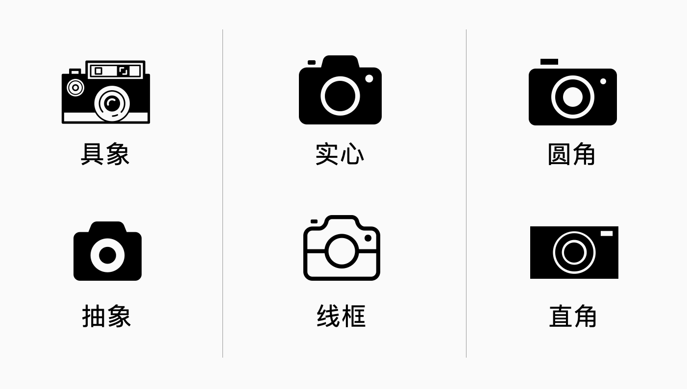
图标风格的含义
如果你的演讲内容相对严肃严谨，比如数据和报告，则可以使用比较尖锐的图标。如果你的演讲内容更偏向感性，都可以使用。有一些圆角的、曲线较多的图标，感觉更加亲近。
当确定了图标风格之后，整个幻灯片中所用的图标都要保持一样的风格。用实心的就一直用实心的，用线框的就一直用线框的，用直角的就一直用直角的。
关于排版的建议
一页一句/一页一图
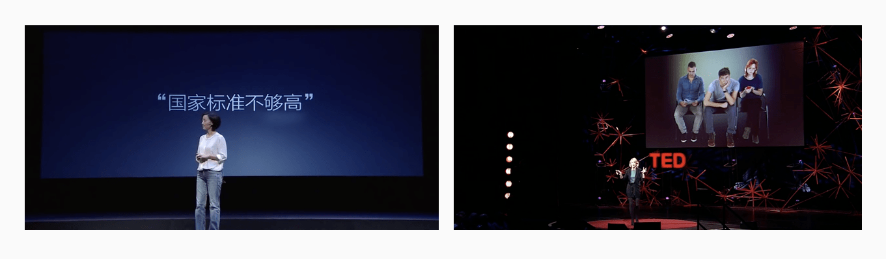
一页一句/一页一图
一页幻灯片中只呈现一张图或者一句话，是一种最常用也最有力的幻灯片排版方式。作为辅助演讲，这种用法恰到好处，而且当硕大的屏幕上只显示一句话的时候，这句话会非常的有力。应用这种排版时，只需要把文字居中摆放即可。另外，图片也适用这种排版方式。
图标/文字海
苹果经常会在介绍 iOS 升级的时候，使用这种文字的形式。图标/文字海有两个好处：一是表达数量之多；二是可以突出重点。
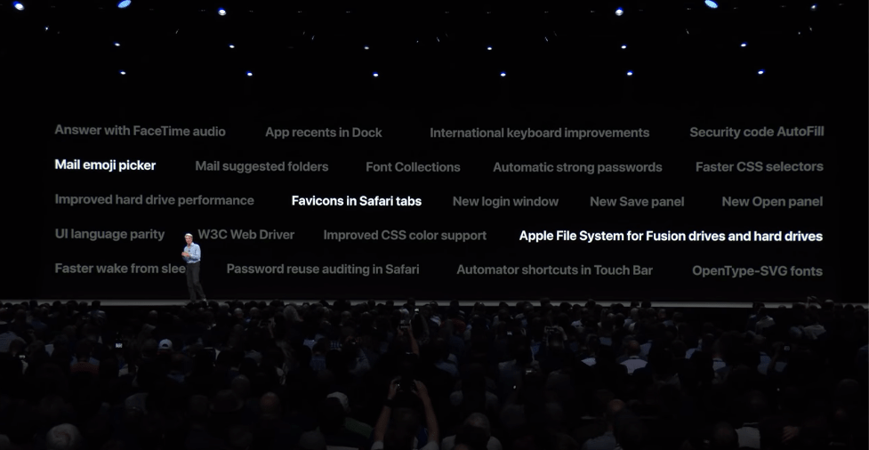
WWDC 2018 macOS 新特性文字海
使用图标或者文字海的时候一定要注意，用高亮或者变大的方式突出一些重点内容。不然这篇文字还就真的只是一片漫无目的的海洋了。
列表
为了讲些数据和项目，你可能需要在幻灯片中插入一个列表。
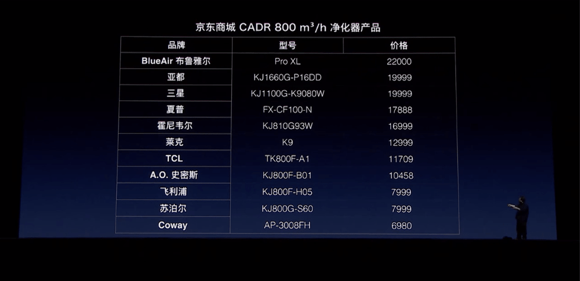
大量数据的列表观感并不好
插入的列表不宜过长，上图这种顶天立地的样子并不是非常好。因为高密集度的信息展现形式，对于观众来说阅读压力还是比较大的。
如果你有时间和精力，可以考虑将减少列表中的项目或者分割成几页幻灯片。无论是演讲节奏还是视觉体验都会更好。
图表
图表是展示数据的一种好办法，我对于幻灯片内使用图表的建议是：一页幻灯片中只插入一个图表，并且突出重点。

图表
这样做是为了减轻观众的阅读压力。如果观众花太多的时间阅读图表中的数据，就不能专注聆听演讲者。所以我们会把图表中最重要的数据标示出来，比如说像这样把折线图的折线高亮出来。
同样，如果一页幻灯片中插入两个图表，并且同时出现。观众的图表阅读时间会大大增加，是不推荐的。当然，如果需要通过多个图表进行对比分析，则可以对数据做出一些简化，比如这样。
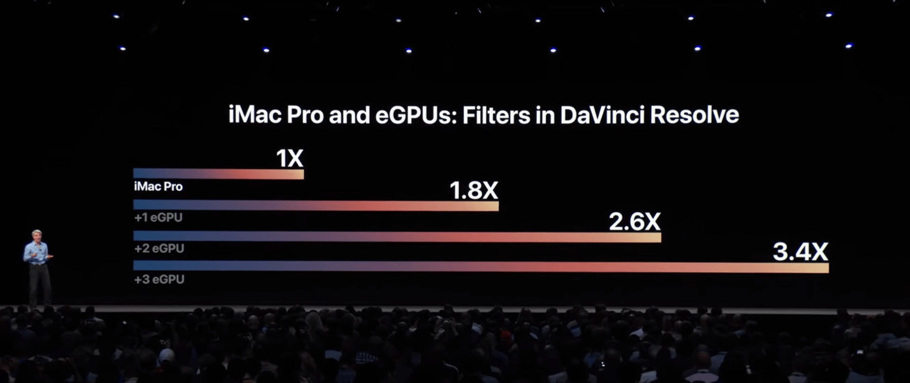
只显示少量数据
总结点
一段演讲开始和结束的时候，经常需要概括性的总结。这个时候你可以用总结点的这种排版方式。横向排列几个关键的图标或图片，并配以文字说明。
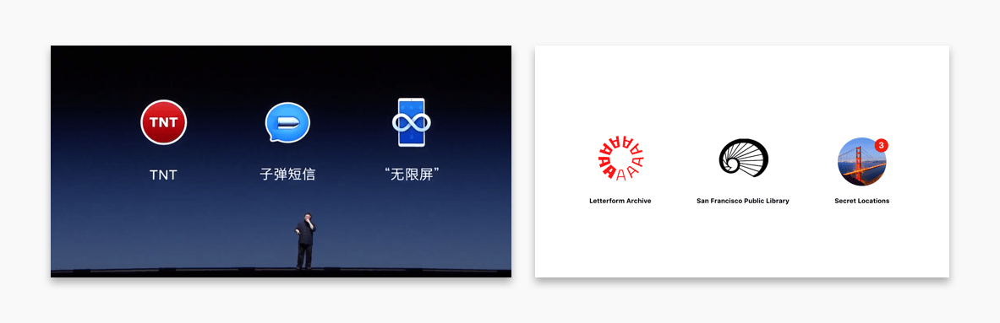
横向排列几个关键的图标或图片，并配以文字说明
如果图标足够清晰或者观众一眼就能看明白的话，是可以不用文字说明的。
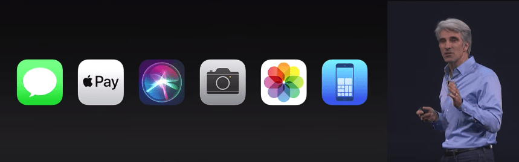
足够有辨识度的图标无需文字说明
时间轴
如果你要展现的东西与时间有关，那么可以使用时间轴这种表达方式。

时间轴
时间轴上的每一个时间点，旁边需要有文字描述以及具体的时间，最好也有配图。
开场图/标题
幻灯片应该是在演讲之前就已经准备好了，但在幻灯片准备好之后，演讲正式开始之前，会有一个幻灯片的空窗期，这个时候开场图就派上用场。
比较简单的做法是显示 logo 或者演讲标题，填补这个空窗期，也可以给演讲内容做个预告。
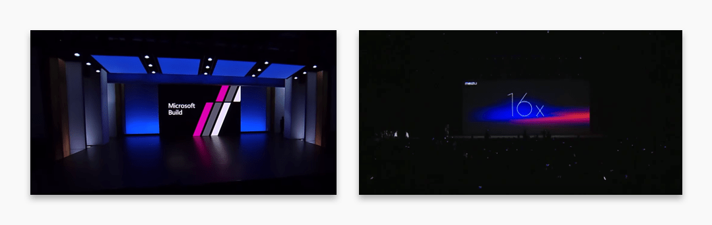
标题式
但对于长期的系列演讲，logo 或标题显示一次两次还可以，如果每次都这样会非常的无聊。更好的办法是显示一张与演讲内容相关，有强烈暗示意义的图片，吊足了观众的胃口，甚至能引起开场前观众的讨论。
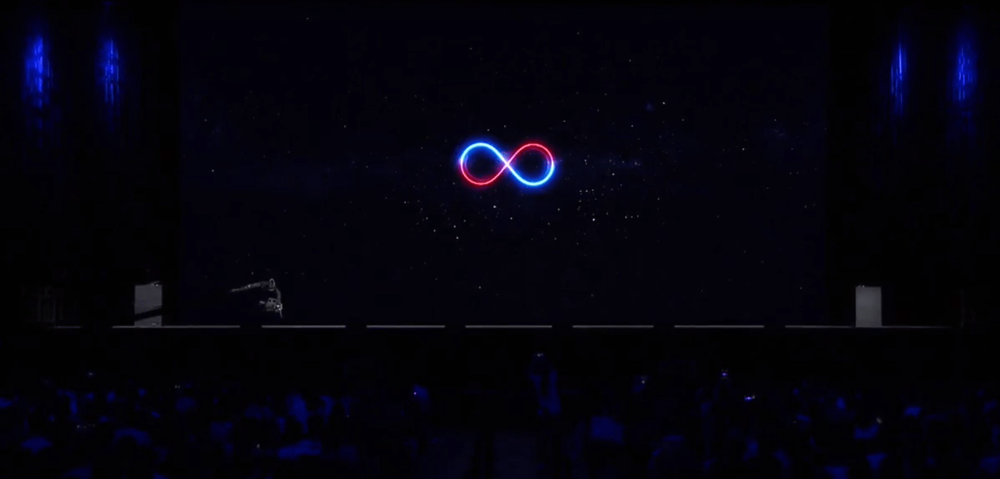
有暗示意义的图片
关于切换动画的建议
动画，是幻灯片的「特殊能力」，幻灯片页面之间的切换可以表现两页幻灯片之间的关系。动画是个利器，但我们也非常容易在这上面犯错，让我们看看我们是怎样犯错的：
我们上文中提到幻灯片中的图片特效要合理使用，并且举了画框的例子，于是我把它做成了幻灯片，配合我的台词「除了画框，另一个例子是反射效果，它看上去非常华丽……」

错误的破碎效果
粉碎动画都非常的「炫酷」，但其实是错误的：我们的演讲内容只是从一个例子切换到了另一个例子，为什么之前的画框就要被打碎呢？就算是要打碎，也不应该打碎画框这个正面例子。所以我们的错误并不在动画本身，而是我们使用动画的方式。
一个合理的破碎动画可以是这样的，这是一场关于环境保护的演讲，配合的台词是「新加坡建立了世界大规模最大的 PX 工厂，可以创造大量经济价值，也因为环保问题停摆了。」

合理的破碎效果
从逻辑上，台词中的「停摆」以及「丧失大量经济价值」的含义和画面破碎并留下黑色的动画效果非常匹配，这就是合理的动画。
远离「炫酷」，走进合理
除了上面玻璃破碎的动画外，幻灯片制作软件中还有非常多非常「炫酷」的动画，就不一一举例了。对于幻灯片的切换动画，我的建议是：远离「炫酷」，走进合理。
这要求我们思考动画效果背后的含义。比如说交叉叠化这种效果制造了一个两页幻灯片交叉的瞬间，表达了前后两页幻灯片间的并列关系。所以两页幻灯片中所讲的内容，也应该是并列关系的。

交叉叠化-并列关系
如果是渐变到黑色呢？这个效果实际上给人的感觉是两个动作。类似手机操作中「从应用退回到桌面，进入另一个应用」的感觉。所以更适合两个关联度不高的内容，通常是一点讲完进入下一点的时候。

渐变到黑色-切换关系
再举一个例子，本章开头的「如何给 iPhone X 关机」也是使用 Keynote 制作的，其中从逐字稿到分页稿运用了「神奇移动」动画。这是因为两页幻灯片中所讲的内容是递进关系（即把逐字稿进行分页，而不是写新的稿子），如果不使用神奇移动，读者就不能一下感受到这种递进关系。让我们对比一下：

神奇移动动画
叠化动画动画
我怎么看幻灯片模板
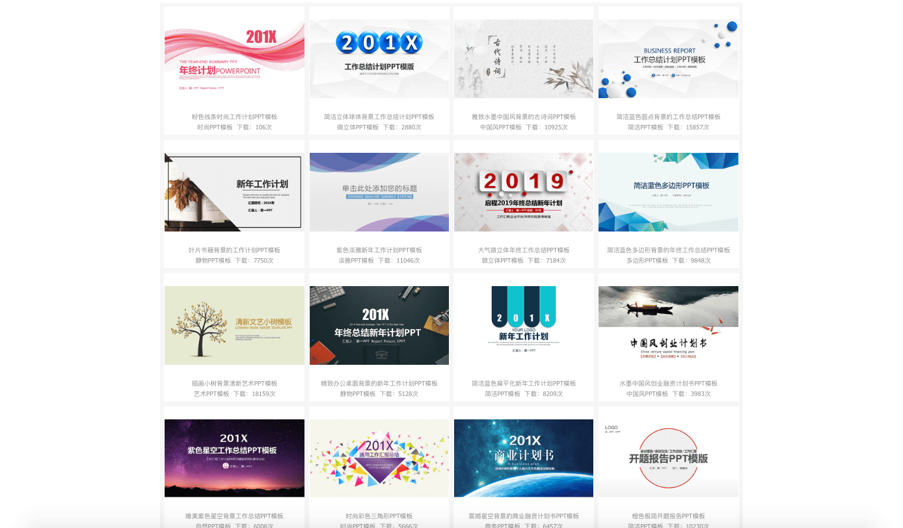
PPT 模板
很多人都把「找模版」作为幻灯片制作的第一步，甚至在百度百科的「幻灯片」词条中「制作要点」的第一条就是「模板」。这其实是对于幻灯片制作的误区，从本章所讨论的内容都说明了：要找到一款完全适合的模板是不可能的事情。
首先，视觉风格是根据内容构思而来的，但幻灯片的模板从来都不会根据你一个人所讲的内容量身定制，那么幻灯片模板中的视觉风格，就会很难完美契合你的演讲主题。
其次是排版，模板中提供了怎样的排版，你就要用怎样的排版。由于我们的排版被限制住了，于是我们开始尝试把自己的幻灯片内容硬套在模板中，而这种做法又违背了排版跟从内容的原则。所以，模板中的排版也很难完美契合你的演讲内容。
退一万步讲，幻灯片模板的质量参差不齐。尤其是免费的幻灯片的模板，通常只是看上去吓唬人，对于美感和细节的掌控甚至不如我们自己制作的幻灯片。
这样一来，幻灯片模板中的东西都不能直接拿来用，多多少少需要我们自己的修改之后才能使用。所以我认为幻灯片模板的意义不在于拿来就用，而是在于为排版和视觉设计提供参考。
比如说当你看到一个这样的 PPT 模板时：
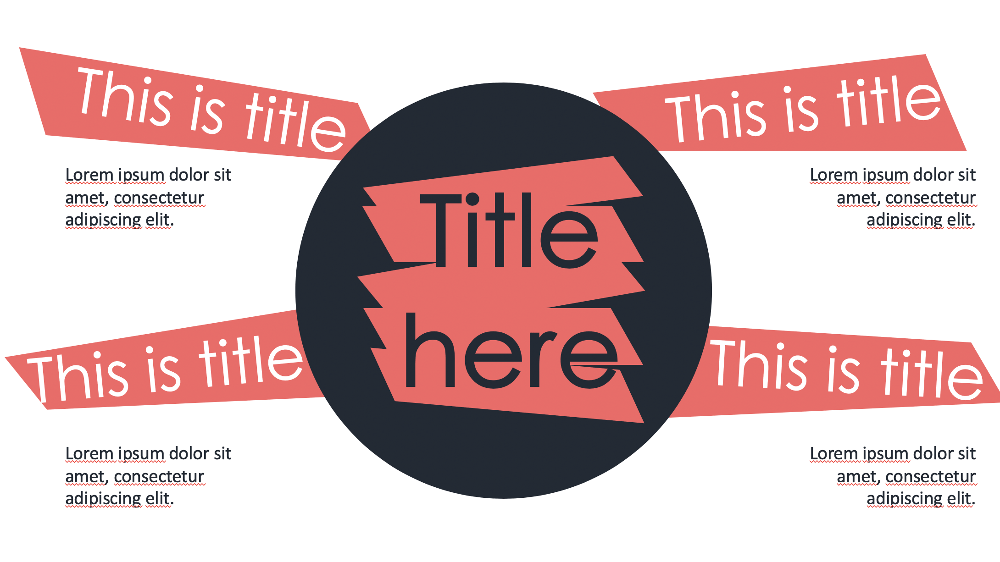
某幻灯片模板
你可以学习其红+深蓝+白色的配色，也可以学习四个角分别展示四个点的排版，然后摒弃它这种没有道理的多边形以及倾斜，将它的排版和配色运用到你的幻灯片中。

学习模板的配色与排版
推荐观看
多观看和多制作幻灯片，是学习幻灯片设计的一个好办法。下面给大家推荐三段演讲视频，这三段视频分别从幻灯片的设计、美感、和幻灯片的角色三个方面，让你有所启发。
Apple 的发布会
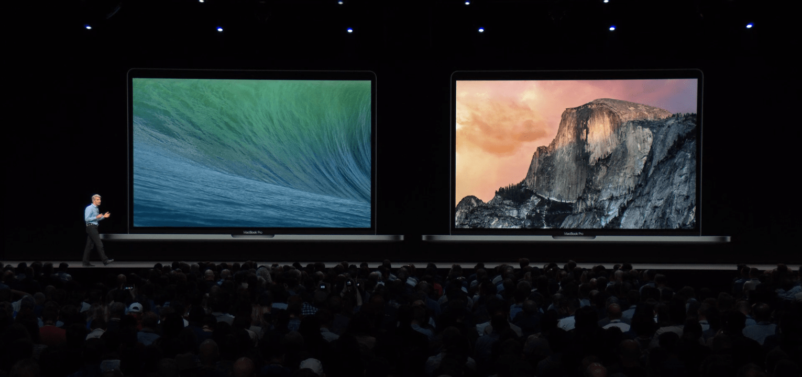
Apple 的发布会
乔布斯的演讲让世人第一次领略了演讲幻灯片的力量，最经典的无非是 iPhone 一代发布时三个产品融为 iPhone 的一段。虽然乔布斯不在了，但苹果的发布会幻灯片设计还一直都走在行业前沿，观看他们演讲不仅可以提高口语水平，还能学习幻灯片设计。你可以去苹果官网的活动页面观看近期演讲。
柴静《穹顶之下》
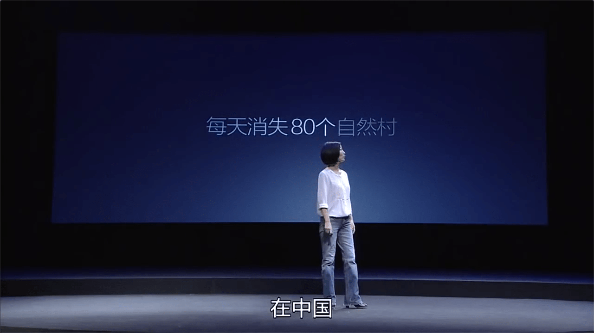
柴静《穹顶之下》
本章很多幻灯片截图都出自柴静的演讲《穹顶之下》，这是一场无论是演讲水平还是幻灯片水准都非常高的演讲，推荐你完整观看。
《凭什么你认为自己不会画画？》

《凭什么你认为自己不会画画？》
《凭什么你认为自己不会画画？》是一个关于绘画的 TED 演讲，演讲者仅用了「现场手绘的幻灯片」配合讲解了很多生活中有趣的语言现象。尽管没有使用常规的幻灯片，但仍然非常精彩。这提醒我们无论幻灯片制作到了怎样高的水平，都要记得幻灯片的意义在于用视觉的力量辅助演讲，而不是演讲的全部。
结语
以上就是本章的全部内容。我们从「为什么要做幻灯片」开始分析了幻灯片的意义与制作流程；并给出了幻灯片制作视觉设计、排版、动画等方面的建议；再指出幻灯片模板其实很难完美契合你的演讲内容；最后为大家推荐了三个值得学习的幻灯片演讲。
下一章，就是本栏目的最后一章了。我们讲了三章关于设计的具体建议，但都是在屏幕上显示的东西，下一章将为大家带来关于纸质内容的设计建议。感谢你的学习。
上一期
精选评论（0） 我的评论